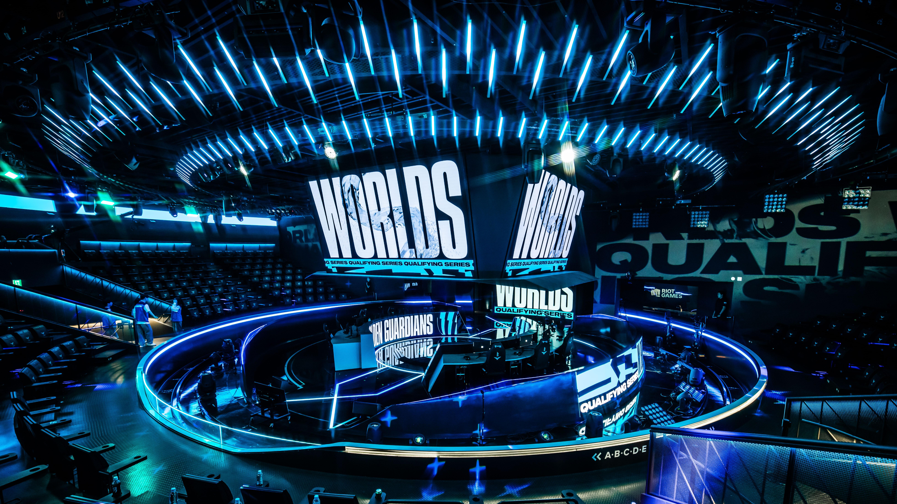

Cách luyện kỹ năng chơi Game đơn giản, hiệu quả
Bạn là Game thủ mới mong muốn mình trở thành một Game thủ chuyên nghiệp trong thời gian ngắn? Hãy cùng tham khảo cách luyện kỹ năng chơi Game đơn giản, hiệu quả được giới thiệu ngay sau đây.
Xác định rõ động lực của bản thân
Xác định rõ động lực của bản thân sẽ giúp bạn vượt qua khó khăn trong qua trình rèn luyện để trở thành Game thủ chuyên nghiệp. Không chỉ có vậy, việc xác định được hướng đi, còn góp phần tạo nên sự kiên trì, bền bỉ trong suốt thời gian tập luyện.
Biết cách lên kế hoạch
Nếu bạn chơi Game để giải trí vậy thì bạn có thể chơi một cách thoải mái. Tuy nhiên, nếu bạn đang trong quá trình luyện kỹ năng chơi Game để trở thành Game thủ thực thụ, vậy thì bạn cần biết cách lên kế hoạch một cách rõ ràng và cụ thể. Dựa vào lộ trình đó, bạn có thể dễ dàng thấy được vị trí và mục tiêu mà mình đang hướng tới.
Bắt đầu từ các bước nhỏ
Để trở thành Game thủ chuyên nghiệp là cả một quá trình dài phấn đấu và rèn luyện, để làm được điều này, bạn nên bắt đầu từ các bước nhỏ. Bằng việc đi từ những bước cơ bản nhất, bạn sẽ nhanh chóng học được những kinh nghiệm hữu ích.

Chọn nhiều thể loại
Nếu bạn nghĩ rằng mình chỉ cần luyện một thể loại Game duy nhất là có thể trở thành Game thủ chuyên nghiệp thì có thể bạn đã nhầm. Điều đó chỉ có thể giúp bạn giành được hạng mục cao ở Game bạn đang luyện. Nếu chuyển sang thể loại khác, bạn rất dễ rơi về vạch xuất phát.
Để khắc phục vấn đề này, bạn cần lên kế hoạch và phân chia thời gian luyện tập hợp lý. Ban đầu sẽ rất khó nhưng bằng niềm đam mê và sự quyết tâm, chắc chắn thành tích của bạn sẽ được cải thiện đáng kể.
Thử sức với các cuộc thi
Mỗi năm đều có rất nhiều cuộc thi khác nhau giúp các Game thủ học hỏi kinh nghiệm và thể hiện khả năng của mình. Bạn nên đăng ký tham gia thi để nhanh chóng nâng cao trình độ của mình.
Bên cạnh việc khẳng định được thành tích, việc tham gia vào các cuộc thi còn giúp người chơi có thêm động lực và quyết tâm khi theo đuổi lĩnh vực khó khăn này.

Rèn luyện sức khỏe mỗi ngày
Sức khỏe và yếu tố vô cùng quan trọng được các Game thủ chuyên nghiệp quan tâm. Chỉ khi có sức khỏe tốt, bạn mới có được trí tuệ minh mẫn và thể lực vượt trội để tập trung cày Game trong thời gian dài.
Nếu bạn ham mê luyện Game đến độ quên ăn quên ngủ, không chăm sóc bản thân. Vậy thì trình độ của bạn chưa được cải thiện thì bạn đã gặp phải nhiều vấn đề về thể chất, gây cản trở đến quá trình nâng cấp trình độ của mình.
Để làm được điều này, bạn cần rèn luyện thể chất mỗi ngày, lên thực đơn ăn uống đầy đủ dưỡng chất. Không bỏ bữa, không sử dụng chất kích thích, không lười biếng. Đây đều là những nguyên tắc được các Game thủ chuyên nghiệp áp dụng.
Việc luyện tập, học hỏi theo các game thủ pro sẽ giúp cho người chơi có thể học được các mẹo, cách chơi hay mà còn giúp cho ta có thể tập học theo cách suy nghĩ, phản ứng giống như những game thủ giỏi.